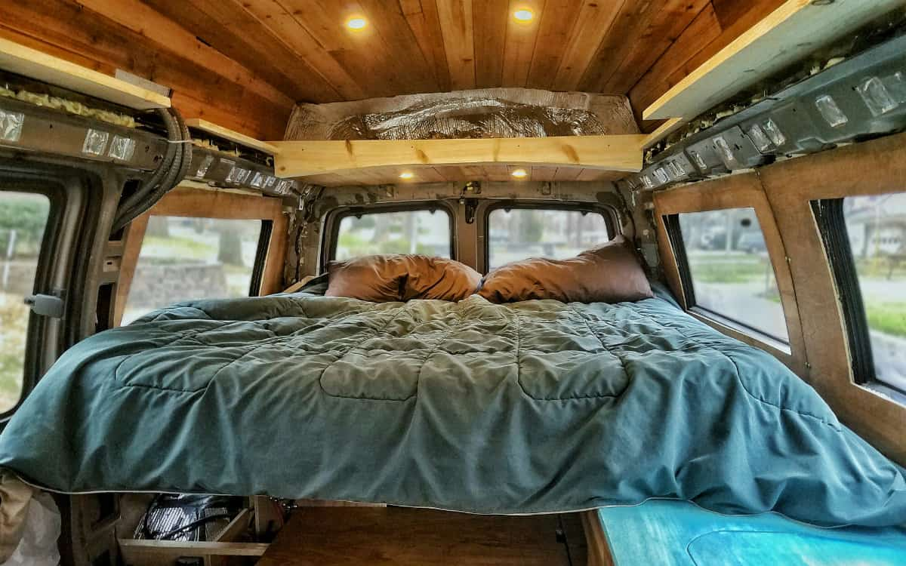
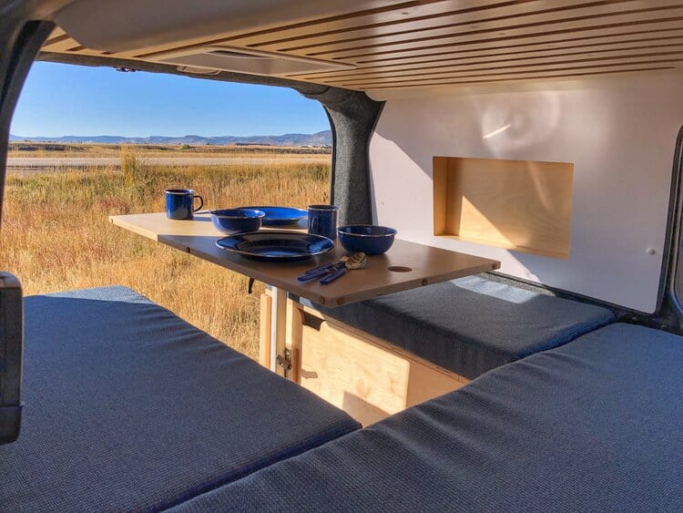

CUDDLETIME!! HOW TO BUILD THE PERFECT BED
One of the fun parts of designing your camper van layout is exploring the innovative ways you can set up your bed. This part of the van conversion is best planned in the very early stages of your layout design. Why? Because nearly all other aspects of your vans layout will revolve around your sleeping arrangements.
What type of bed you want in your van conversion is one of the first decisions you’ll make in your conversion. Maybe you want a platform bed so you can store mountain bikes and other gear. Or perhaps the idea of making the bed every day seems like a major pain. On the other hand, you might want a dinette where you can work and entertain guests. If you’re trying to decide between a permanent platform bed with storage for gear OR a convertible style bed that will provide seating, this video will provide van conversion bed ideas for you to ponder.